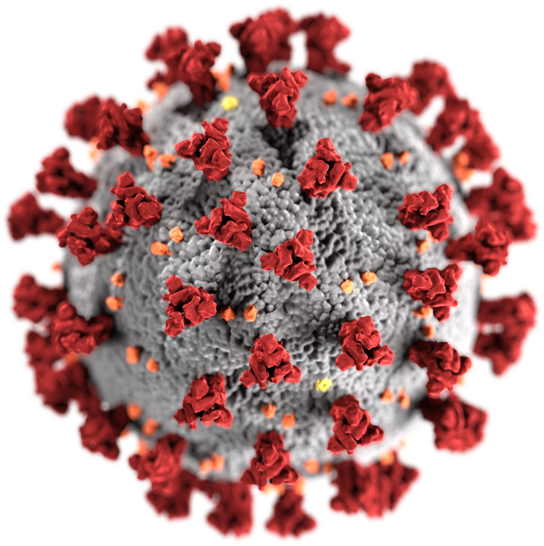

ما هو فيرس كورونا؟
فيروسات كورونا هي مجموعةٌ من الفيروسات تُسبب أمراضًا للثدييات والطيور. يُسبب الفيروس في البشر عداوَى في الجهاز التنفسي والتي تتضمن الزكام وعادةً ما تكون طفيفةً، ونادرًا ما تكون قاتلةً مثل المتلازمة التنفسية الحادة الوخيمة ومتلازمة الشرق الأوسط التنفسية وفيروس كورونا الجديد الذي سبب تفشي فيروس كورونا الجديد 2019-20. قد تُسبب إسهالًا في الأبقار والخنازير، أما في الدجاج فقد تُسبب أمراضًا في الجهاز التنفسي العلوي. لا توجد لقاحاتٍ أو مضاداتٌ فيروسية موافقٌ عليها للوقاية أو العلاج من هذه الفيروسات.تنتمي فيروسات كورونا إلى فُصيلة الكوراناويات المستقيمة ضمن فصيلة الفيروسات التاجية ضمن رتبة الفيروسات العشية. تُعد فيروسات كورونا فيروساتٍ مُغلفة مع جينومِ حمضٍ نووي ريبوزي مفرد السلسلة موجب الاتجاه، كما تمتلك قفيصة منواة حلزونية متماثلة. يبلغ حجم جينوم فيروسات كورونا حوالي 26 إلى 32 كيلو قاعدة، وهو الأكبر بين فيروسات الحمض النووي الريبوزي (RNA virus). يُشتق اسم "coronavirus" (عربيًا: فيروس كورونا. اختصارًا CoV) من (باللاتينية: corona) وتعني التاج أو الهالة، حيثُ يُشير الاسم إلى المظهر المميز لجزيئات الفيروس (الفريونات) والذي يظهر عبر المجهر الإلكتروني، حيث تمتلك خُملًا من البروزات السطحية، مما يُظهرها على شكل تاج الملك أو الهالة الشمسية.
: أعراض فيروس كورونا تشمل
- حمى أو رعشة برد
- صداع
- كحة، إحتقان بالحلق، إحتقان الأنف أو سيلان الأنف
- فقدان جديد لحاسة التذوق أو الشم
- ضيق بالتنفس أو صعوبة بالتنفس
- غثيان، قيء أو إسهال
- إرهاق، آلام بالعضلات أو الجسم